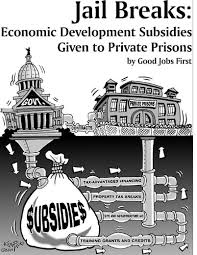

PRIVATE PRISONS
bloomburg The U.S. has stumbled on a particularly inefficient form of providing services. Instead of having government employees do the work, or leaving it to the private sector, the U.S. sometimes combines government funding with private execution. This sort of pseudo-privatization generally fails to control costs, even as it reduces oversight and provides low-quality service. There are many examples of this. No-bid contracting in the health-care, defense and infrastructure industries drives up costs. Expensive mercenary contractors like Blackwater (now Academi) were notorious for human-rights abuses during the Iraq War But perhaps the most egregious example is private prisons. Implementing criminal justice is one of the most critical, central functions of a state. Prison privatization turns this function over to contractors with comparatively little accountability. That opens the door for both cost overruns and mistreating inmates. Private prisons are not responsible for the excessive U.S. incarceration rate, the result mainly of misguided criminal-justice policy; as of 2016, only 8.5 percent of prisoners in America were held at private facilities. But the number of people in private prisons has grown, from about 69,000 in 1999 to about 128,000 in 2016 (the last year for which reliable data is available). In the process, they’ve become a lightning rod for criticism of the U.S. justice system — and rightfully so. Evidence shows that these institutions neither save money nor improve outcomes. Cost-saving is the main rationale for private prisons. But beyond faith in the power of private ownership to increase efficiency, there isn’t much reason to think the approach has the intended effect. Competition is scarce, with three big companies — CoreCivic Inc. (formerly Corrections Corporation of America), GEO Group Inc. and Management and Training Corp. — controlling 96 percent of private-prison beds. State laws often require private prisons to operate at lower per-day, per-prisoner cost than state prisons. But these costs are hard to compare, thanks to differences in capital spending, employee compensation packages and the characteristics of the inmates at the different institutions. When the Government Accountability Office has looked into the issue, it hasn't been able to verify the existence of cost differences between private and government-run prisons. Independent research has found little if any cost differential. And audits in some states have found that private prisons were actually more costly on a per-person, per-day basis.

In an ugly twist, the incorrect perception that private prisons are cheaper may lead courts to incarcerate people for a longer time. A recent paper by economists Christian Dippel and Michael Poyker compared sentencing across state lines, and found that opening a private prison caused judges to dish out longer prison terms. The authors found that the effect was greater in states with more laws mandating larger private-prison cost savings, which suggests that judges felt more comfortable with longer sentences because they weren't as worried about the cost. Using more of a resource because it seems cheaper is a well-known phenomenon in economics. But because in this case the cheapness is illusory rather than real, the existence of the private prisons actually increases taxpayer spending on imprisonment — not to mention the greater human cost of longer sentences.Inadequate oversight of private prisons doesn’t just affect cost — it compromises quality as well. A 2016 report by the Justice Department found a higher incidence of safety- and security-related incidents, “serious or systemic” safety failures, and improper housing at many private prisons. At least one private prison was the subject of criminal investigation for encouraging gang violence among inmates. In addition to raising costs and lowering the quality of services, private prisons appear to have little effect on inmate outcomes after release. Mukherjee found no difference in recidivism for private-prison inmates.
So although private prisons aren’t a huge factor at the national level, they’re a glaring symbol of the failure of pseudo-privatization. Private ownership, by itself, offers no magic pixie dust that saves money or improves quality; instead, because government sends money without sufficient oversight, it often pays more and gets less. Private prisons should be seen as a failed experiment, and phased out. The decision of JPMorgan Chase & Co. to stop providing financing to private prisons is a welcome one, but in the end, the most effective solution is just to ban the practice — as the Barack Obama administration was planning to do, before the Donald Trump administration came in and reversed the decision. Unfortunately, although private prisons ought to be ended today, the task may have to wait for the next administration.A 2017 paper by economist Anita Mukherjee examining prison privatization in Mississippi found that private prisons tended to give prisoners more conduct violations as well, increasing their average time served by about 90 days. This practice, which obviously fills the private prison companies’ coffers at taxpayer expense, is a result of weak government oversight.
